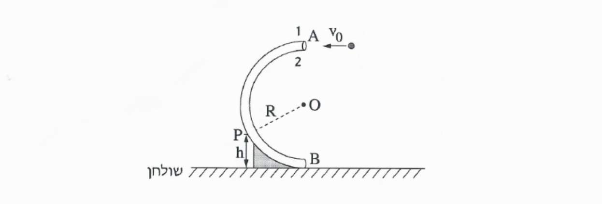

שאלה 4
בתרשים שלפניכם מוצג צינור דק הנמצא במישור אנכי הניצב לשולחן אופקי. צורת הצינור היא חצי מעגל, שמרכזו בנקודה O ורדיוסו R = 80 cm.
כאשר זורקים כדור דרך הפתח הגבוה של הצינור בנקודה A, הכדור נע לאורך הצינור ויוצא דרך הפתח הנמוך בנקודה B (קוטר הכדור קטן רק מעט מקוטר הצינור).
כוחות החיכוך בין הכדור לצינור ניתנים להזנחה.

כדור שמסתו m = 0.05kg נזרק בנקודה A לתוך הצינור במהירות התחלתית שגודלה v0 = 3.2 m/s בכיוונה אופקי (ראו תרשים). הכדור נע בתוך הצינור ויוצא ממנו בנקודה B.
א. חשבו את גודלו של הכוח הצנטריפטלי שפועל על הכדור בנקודה A בתחילת התנועה המעגלית. (5 נקודות)
ב.
(1) חשבו את גודלו של הכוח שהצינור הפעיל על הכדור בחלפו בנקודה A.
(2) קבעו איזה דופן של הצינור – 1 או 2 (ראו תרשים) – הפעיל כוח על הכדור בחלפו בנקודה A. נמקו את קביעתכם.
(8 נקודות)
במהלך תנועתו חלף הכדור בנקודה P, הנמצאת בגובה h = 40cm מעל פני השולחן. עבור התנועה המעגלית של הכדור בחלפו בנקודה P:
ג. חשבו את גודל מהירות הכדור. (8 נקודות)
ד. חשבו את גודל התאוצה הרדיאלית של הכדור. (5 נקודות)
ה. חשבו את גודל התאוצה המשיקית של הכדור. (7.33 נקודות)